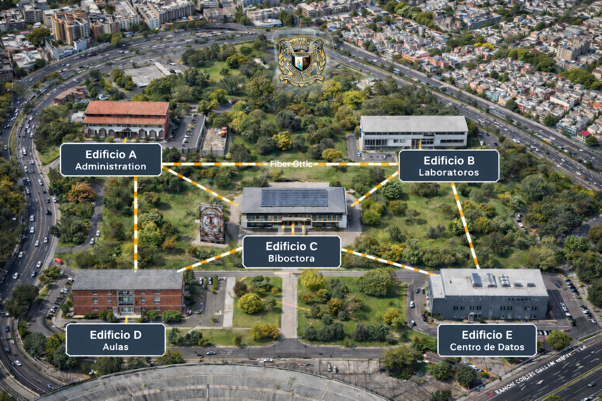
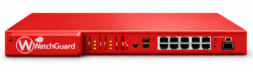
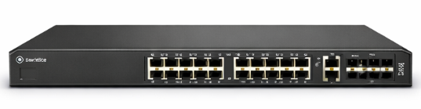
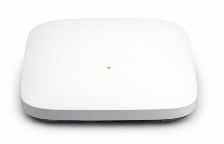
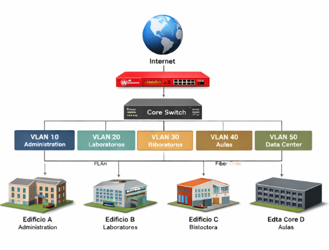

<!DOCTYPE html>
<html lang="es">
<head>
<meta charset="UTF-8">
<meta name="viewport" content="width=device-width, initial-scale=1.0">
<title>Proyecto de Red Empresarial</title>
<link href="https://cdn.jsdelivr.net/npm/bootstrap@5.3.0/dist/css/bootstrap.min.css" rel="stylesheet">
<style>
body {
    background: linear-gradient(135deg, #0f1720 0%, #1f3a5f 50%, #0f1720 100%);
    color: #e6edf3;
    font-family: 'Segoe UI', Tahoma, Geneva, Verdana, sans-serif;
    font-size: 16px;
}
header {
    background: linear-gradient(120deg, #0f1720, #1f3a5f);
    padding: 40px 20px;
    text-align: center;
    border-bottom: 3px solid #00d4ff;
}
header h1 {
    font-size: clamp(1.5rem, 5vw, 3.5rem);
    margin-bottom: 10px;
}
header p {
    font-size: clamp(1rem, 3vw, 1.25rem);
}
.card {
    background: rgba(23, 34, 48, 0.95);
    border: 1px solid #233244;
    border-radius: 15px;
    box-shadow: 0 10px 30px rgba(0, 0, 0, 0.5);
    transition: transform 0.3s ease, box-shadow 0.3s ease;
    color: #ffffff;
    margin-bottom: clamp(12px, 2vw, 16px);
}
.card:hover {
    transform: translateY(-5px);
    box-shadow: 0 15px 40px rgba(0, 0, 0, 0.7);
}
.device img {
    border-radius: 10px;
    background: white;
    padding: 5px;
}
.table {
    background: rgba(31, 58, 95, 0.8);
    color: #e6edf3;
}
.table th {
    background: #1f3a5f;
}
footer {
    background: #0f1720;
    border-top: 1px solid #233244;
    padding: clamp(15px, 2vw, 20px) 0;
}
.badge {
    font-size: 0.8em;
}
.device-box {
    background: linear-gradient(135deg, rgba(31, 58, 95, 0.8), rgba(23, 145, 178, 0.3));
    border: 2px solid rgba(0, 212, 255, 0.4);
    border-radius: 15px;
    padding: clamp(12px, 3vw, 20px);
    margin: clamp(6px, 2vw, 10px);
    cursor: pointer;
    transition: all 0.4s cubic-bezier(0.4, 0, 0.2, 1);
    text-align: center;
    position: relative;
    overflow: hidden;
    flex: 1;
    min-width: 100px;
}
.device-box::before {
    content: '';
    position: absolute;
    top: -50%;
    right: -50%;
    width: 100%;
    height: 100%;
    background: radial-gradient(circle, rgba(0, 212, 255, 0.3) 0%, transparent 70%);
    opacity: 0;
    transition: opacity 0.4s ease;
}
.device-box:hover {
    background: linear-gradient(135deg, rgba(0, 212, 255, 0.2), rgba(23, 145, 178, 0.5));
    border-color: #00d4ff;
    transform: translateY(-8px) scale(1.08);
    box-shadow: 0 15px 40px rgba(0, 212, 255, 0.3), inset 0 0 20px rgba(0, 212, 255, 0.1);
}
.device-box:hover::before {
    opacity: 1;
}
.device-box.selected {
    background: linear-gradient(135deg, rgba(0, 212, 255, 0.4), rgba(23, 145, 178, 0.7));
    border-color: #00d4ff;
    box-shadow: 0 0 30px rgba(0, 212, 255, 0.8), 0 0 60px rgba(0, 212, 255, 0.3), inset 0 0 20px rgba(0, 212, 255, 0.2);
    transform: scale(1.1);
}
.device-box .device-icon {
    font-size: clamp(24px, 5vw, 32px);
    margin-bottom: clamp(6px, 1.5vw, 10px);
    display: inline-block;
    animation: float 3s ease-in-out infinite;
}
.device-box .device-name {
    font-size: clamp(0.75em, 2vw, 0.95em);
    font-weight: bold;
    margin-bottom: clamp(6px, 1.5vw, 8px);
    color: #ffffff;
}
.device-box .device-ip {
    font-size: clamp(0.65em, 1.8vw, 0.8em);
    color: #00d4ff;
    font-family: 'Courier New', monospace;
    background: rgba(0, 212, 255, 0.1);
    padding: clamp(3px, 1vw, 5px) clamp(5px, 1.5vw, 8px);
    border-radius: 5px;
    display: inline-block;
    word-break: break-all;
}
@keyframes float {
    0%, 100% { transform: translateY(0px); }
    50% { transform: translateY(-8px); }
}
.device-box .device-type {
    font-size: clamp(0.6em, 1.5vw, 0.7em);
    color: #90ee90;
    margin-top: clamp(6px, 1.5vw, 8px);
    text-transform: uppercase;
    letter-spacing: 0.5px;
}
.ping-animation {
    display: inline-block;
    width: 20px;
    height: 20px;
    background: #00d4ff;
    border-radius: 50%;
    animation: ping 1.5s ease-in-out infinite;
}
@keyframes ping {
    0% { transform: scale(0.8); opacity: 1; }
    75% { transform: scale(1.2); opacity: 0.5; }
    100% { transform: scale(1.4); opacity: 0; }
}
@keyframes pulse {
    0% { box-shadow: 0 0 0 0 rgba(0, 212, 255, 0.7); }
    70% { box-shadow: 0 0 0 20px rgba(0, 212, 255, 0); }
    100% { box-shadow: 0 0 0 0 rgba(0, 212, 255, 0); }
}
.ping-path {
    display: flex;
    align-items: center;
    justify-content: center;
    gap: clamp(12px, 3vw, 25px);
    margin: clamp(20px, 5vw, 35px) 0;
    flex-wrap: wrap;
    background: rgba(0, 212, 255, 0.05);
    padding: clamp(15px, 3vw, 25px);
    border-radius: 15px;
    border: 1px solid rgba(0, 212, 255, 0.2);
}
.device-endpoint {
    display: flex;
    flex-direction: column;
    align-items: center;
    gap: clamp(8px, 2vw, 12px);
    padding: clamp(10px, 2.5vw, 15px);
    background: rgba(31, 58, 95, 0.6);
    border-radius: 12px;
    min-width: clamp(100px, 20vw, 140px);
    border: 2px solid rgba(0, 212, 255, 0.3);
    position: relative;
}
.device-endpoint.active {
    border-color: #00d4ff;
    box-shadow: 0 0 20px rgba(0, 212, 255, 0.5);
    animation: pulse 2s infinite;
}
.device-endpoint .endpoint-icon {
    font-size: clamp(28px, 8vw, 40px);
    animation: bounce 2s ease-in-out infinite;
}
@keyframes bounce {
    0%, 100% { transform: translateY(0); }
    50% { transform: translateY(-10px); }
}
.device-endpoint .endpoint-name {
    font-weight: bold;
    font-size: clamp(0.85em, 2vw, 0.95em);
    color: #ffffff;
}
.device-endpoint .endpoint-ip {
    font-size: clamp(0.75em, 1.8vw, 0.85em);
    color: #00d4ff;
    font-family: 'Courier New', monospace;
}
.connection-line {
    flex: 1;
    min-width: 100px;
    height: 4px;
    background: linear-gradient(90deg, #00d4ff, #ffb700);
    border-radius: 2px;
    position: relative;
    overflow: hidden;
}
.connection-line::after {
    content: '';
    position: absolute;
    top: 0;
    left: -100%;
    width: 100%;
    height: 100%;
    background: linear-gradient(90deg, transparent, rgba(255, 255, 255, 0.8), transparent);
    animation: connectionFlow 2s infinite;
}
@keyframes connectionFlow {
    0% { left: -100%; }
    100% { left: 100%; }
}
.connection-label {
    padding: clamp(6px, 1.5vw, 8px) clamp(10px, 2vw, 15px);
    background: rgba(255, 183, 0, 0.2);
    border: 1px solid rgba(255, 183, 0, 0.5);
    border-radius: 8px;
    font-size: clamp(0.7em, 1.8vw, 0.85em);
    color: #ffb700;
    font-weight: bold;
    white-space: nowrap;
}
.ping-result {
    background: linear-gradient(135deg, rgba(0, 212, 255, 0.15), rgba(23, 145, 178, 0.1));
    border: 2px solid rgba(0, 212, 255, 0.4);
    border-radius: 15px;
    padding: clamp(15px, 3vw, 25px);
    margin: clamp(15px, 3vw, 20px) 0;
    animation: slideInResult 0.6s cubic-bezier(0.34, 1.56, 0.64, 1);
    box-shadow: 0 20px 40px rgba(0, 0, 0, 0.3);
}
@keyframes slideInResult {
    from { 
        transform: translateY(30px) scale(0.95);
        opacity: 0;
    }
    to { 
        transform: translateY(0) scale(1);
        opacity: 1;
    }
}
.ping-result-header {
    display: flex;
    justify-content: space-between;
    align-items: center;
    margin-bottom: clamp(15px, 3vw, 25px);
    padding-bottom: clamp(10px, 2vw, 15px);
    border-bottom: 2px solid rgba(0, 212, 255, 0.3);
    flex-wrap: wrap;
    gap: 10px;
}
.ping-result-header h5 {
    font-size: clamp(1em, 3vw, 1.3em);
    margin: 0;
    color: #00d4ff;
}
.result-status {
    display: flex;
    align-items: center;
    gap: 10px;
}
.result-status-icon {
    font-size: clamp(20px, 5vw, 28px);
}
.status-badge {
    display: inline-block;
    padding: clamp(6px, 1.5vw, 8px) clamp(12px, 2vw, 16px);
    border-radius: 25px;
    font-weight: bold;
    font-size: clamp(0.75em, 2vw, 0.9em);
    letter-spacing: 0.5px;
    text-transform: uppercase;
}
.status-online { 
    background: linear-gradient(135deg, #00ff00, #00cc55);
    color: #000;
    box-shadow: 0 0 20px rgba(0, 255, 0, 0.5);
}
.status-offline { 
    background: linear-gradient(135deg, #ff4444, #cc0000);
    color: #fff;
    box-shadow: 0 0 20px rgba(255, 68, 68, 0.5);
}
.metric-row {
    display: grid;
    grid-template-columns: repeat(auto-fit, minmax(150px, 1fr));
    gap: clamp(12px, 2vw, 20px);
    margin: clamp(15px, 3vw, 20px) 0;
}
.metric-card {
    background: rgba(31, 58, 95, 0.6);
    border: 1px solid rgba(0, 212, 255, 0.3);
    border-radius: 10px;
    padding: clamp(12px, 2vw, 15px);
    text-align: center;
    transition: all 0.3s ease;
}
.metric-label {
    font-size: clamp(0.7em, 1.8vw, 0.85em);
    color: #b0c4de;
    margin-bottom: clamp(6px, 1.5vw, 8px);
    text-transform: uppercase;
    letter-spacing: 0.5px;
}
.metric-value {
    font-size: clamp(1.3em, 4vw, 1.8em);
    color: #00d4ff;
    font-weight: bold;
}
.route-container {
    background: rgba(31, 58, 95, 0.5);
    border: 1px solid rgba(0, 212, 255, 0.3);
    border-radius: 12px;
    padding: 20px;
    margin: 20px 0;
}
.analysis-grid {
    display: grid;
    grid-template-columns: repeat(auto-fit, minmax(200px, 1fr));
    gap: clamp(12px, 2vw, 15px);
    margin-top: clamp(12px, 2vw, 15px);
}
.analysis-item {
    background: rgba(0, 212, 255, 0.05);
    border-left: 3px solid #00d4ff;
    padding: clamp(10px, 2vw, 12px);
    border-radius: 5px;
    font-size: clamp(0.8em, 1.8vw, 0.9em);
}
.analysis-item strong {
    color: #00d4ff;
}

/* =================== MEDIA QUERIES RESPONSIVAS =================== */

/* Pantallas muy pequeñas (Mobile: menos de 480px) */
@media (max-width: 480px) {
    .container {
        padding-left: 12px;
        padding-right: 12px;
    }
    
    .card {
        border-radius: 10px;
        margin-bottom: 15px;
    }
    
    header h1 {
        font-size: 1.5rem;
    }
    
    header p {
        font-size: 0.95rem;
    }
    
    .device-box {
        padding: 12px;
        margin: 6px;
        min-width: 100px;
        max-width: 150px;
    }
    
    .device-box .device-icon {
        font-size: 24px;
        margin-bottom: 6px;
    }
    
    .device-box .device-name {
        font-size: 0.75em;
    }
    
    .device-box .device-ip {
        font-size: 0.65em;
        padding: 3px 5px;
    }
    
    #sourceDevices, #destDevices {
        min-height: 220px !important;
    }
    
    .ping-path {
        gap: 12px;
        padding: 15px;
        margin: 20px 0;
    }
    
    .device-endpoint {
        min-width: 110px;
        padding: 10px;
    }
    
    .device-endpoint .endpoint-icon {
        font-size: 28px;
    }
    
    .device-endpoint .endpoint-name {
        font-size: 0.85em;
    }
    
    .device-endpoint .endpoint-ip {
        font-size: 0.75em;
    }
    
    .connection-label {
        font-size: 0.7em;
        padding: 5px 10px;
    }
    
    .connection-line {
        min-width: 40px;
    }
    
    .metric-row {
        grid-template-columns: repeat(2, 1fr);
        gap: 12px;
    }
    
    .metric-card {
        padding: 12px;
    }
    
    .metric-label {
        font-size: 0.7em;
    }
    
    .metric-value {
        font-size: 1.3em;
    }
    
    .ping-result {
        padding: 15px;
        border-radius: 12px;
    }
    
    .ping-result-header {
        flex-direction: column;
        gap: 10px;
    }
    
    .ping-result-header h5 {
        font-size: 1.1em;
    }
    
    .status-badge {
        font-size: 0.8em;
        padding: 6px 12px;
    }
    
    .analysis-grid {
        grid-template-columns: 1fr;
        gap: 10px;
    }
    
    .analysis-item {
        padding: 10px;
        font-size: 0.85em;
    }
    
    table {
        font-size: 0.8em;
    }
    
    .table th, .table td {
        padding: 0.5rem;
    }
    
    .btn-lg {
        font-size: 0.95rem;
        padding: 10px 20px !important;
    }
}

/* Tablets (481px - 768px) */
@media (min-width: 481px) and (max-width: 768px) {
    .container {
        padding-left: 15px;
        padding-right: 15px;
    }
    
    header h1 {
        font-size: 2rem;
    }
    
    header p {
        font-size: 1.05rem;
    }
    
    .device-box {
        padding: 15px;
        margin: 8px;
        min-width: 130px;
        max-width: 170px;
    }
    
    .device-box .device-icon {
        font-size: 28px;
    }
    
    .device-box .device-name {
        font-size: 0.85em;
    }
    
    #sourceDevices, #destDevices {
        min-height: 250px !important;
    }
    
    .ping-path {
        gap: 15px;
        padding: 20px;
    }
    
    .device-endpoint {
        min-width: 120px;
    }
    
    .device-endpoint .endpoint-icon {
        font-size: 32px;
    }
    
    .metric-row {
        grid-template-columns: repeat(2, 1fr);
        gap: 15px;
    }
    
    .metric-card {
        padding: 13px;
    }
    
    .metric-label {
        font-size: 0.8em;
    }
    
    .metric-value {
        font-size: 1.5em;
    }
    
    .analysis-grid {
        grid-template-columns: repeat(2, 1fr);
    }
    
    table {
        font-size: 0.9em;
    }
    
    .btn-lg {
        font-size: 1rem;
        padding: 11px 30px !important;
    }
}

/* Desktop (769px en adelante) */
@media (min-width: 769px) {
    .device-box {
        max-width: 180px;
    }
    
    .device-box:hover {
        transform: translateY(-8px) scale(1.08);
    }
    
    .device-box.selected {
        transform: scale(1.1);
    }
    
    .metric-row {
        grid-template-columns: repeat(4, 1fr);
    }
    
    .analysis-grid {
        grid-template-columns: repeat(3, 1fr);
    }
}

/* Pantallas grande (1200px en adelante) */
@media (min-width: 1200px) {
    .container {
        max-width: 1140px;
    }
}
</head>

<body>

<header class="bg-dark text-white py-5 text-center">
<h1 class="display-4 fw-light">Infraestructura de Red Empresarial</h1>
<p class="lead">Diseño Avanzado con Seguridad WatchGuard</p>
</header>

<div class="container my-5">

<div class="card mb-4 shadow-lg">
<div class="card-body text-white">
<h2 class="card-title text-primary">Introducción</h2>
<p class="card-text">Este proyecto presenta el diseño integral y la planificación estratégica de una red empresarial robusta para un campus universitario con múltiples edificios. Implementamos una solución avanzada que combina firewalls WatchGuard de última generación, switches administrables de alto rendimiento y una segmentación VLAN inteligente. Nuestro enfoque garantiza no solo la seguridad óptima contra amenazas cibernéticas, sino también un rendimiento excepcional, escalabilidad y facilidad de gestión. La red está diseñada para soportar el crecimiento futuro, integrando tecnologías inalámbricas seguras y una infraestructura de fibra óptica de alta velocidad.</p>
</div>
</div>

<div class="card mb-4 shadow-lg">
<div class="card-body text-white">
<h2 class="card-title text-primary">Mapa del Campus</h2>

<p class="card-text">La imagen muestra una vista aérea del campus universitario ubicado en una gran ciudad, con cinco edificios principales interconectados mediante enlaces de fibra óptica (líneas punteadas amarillas y blancas). Los edificios representan: <span class="badge bg-info">Administración (A)</span>, <span class="badge bg-success">Laboratorios (B)</span>, <span class="badge bg-warning">Biblioteca (C)</span>, <span class="badge bg-danger">Aulas (D)</span> y <span class="badge bg-secondary">Centro de Datos (E)</span>. Este mapa conceptual sirve como base para planificar la topología física de la red, visualizando la distribución espacial y las conexiones de alta velocidad que unen los diferentes departamentos.</p>
</div>
</div>

<div class="row g-4 mb-4">
<div class="col-md-4">
<div class="card h-100 shadow-lg">
<div class="card-body d-flex align-items-center text-white">

<div>
<h5 class="card-title text-danger">Firewall WatchGuard</h5>
<p class="card-text">Nuestro firewall central protege la red contra ataques externos avanzados, incluyendo DDoS, malware y amenazas de día cero. Controla el tráfico de red con políticas granulares, soporta VPN seguras para acceso remoto y ofrece monitoreo en tiempo real con alertas inteligentes. Compatible con estándares de seguridad empresarial como PCI DSS y HIPAA.</p>
</div>
</div>
</div>
</div>

<div class="col-md-4">
<div class="card h-100 shadow-lg">
<div class="card-body d-flex align-items-center text-white">

<div>
<h5 class="card-title text-warning">Switch Administrable</h5>
<p class="card-text">Switches de capa 3 distribuyen eficientemente el tráfico dentro de cada edificio, soportando velocidades Gigabit y 10 Gigabit. Permiten la creación de VLAN para segmentación lógica, QoS para priorización de tráfico crítico y protocolos de redundancia como STP para alta disponibilidad. Gestionables vía web y SNMP para monitoreo centralizado.</p>
</div>
</div>
</div>
</div>

<div class="col-md-4">
<div class="card h-100 shadow-lg">
<div class="card-body d-flex align-items-center text-white">

<div>
<h5 class="card-title text-info">Access Point</h5>
<p class="card-text">Puntos de acceso Wi-Fi 6 proporcionan conectividad inalámbrica de alta velocidad y baja latencia. Implementan seguridad WPA3, roaming seamless entre APs y gestión centralizada. Soporte para múltiples SSID para segmentar redes de invitados, estudiantes y personal administrativo, con capacidades de análisis de tráfico y control de ancho de banda.</p>
</div>
</div>
</div>
</div>
</div>

<div class="card mb-4 shadow-lg">
<div class="card-body text-white">
<h2 class="card-title text-primary">Diagrama de Red</h2>

<p class="card-text">Este diagrama ilustra la topología lógica de la red, mostrando la interconexión de dispositivos y el flujo de datos. El firewall actúa como gateway central, los switches manejan la distribución local, y los access points extienden la cobertura inalámbrica. Las VLAN aseguran la separación de tráfico, mientras que los enlaces de fibra óptica garantizan alta velocidad y redundancia.</p>
</div>
</div>

<div class="card mb-4 shadow-lg">
<div class="card-header bg-primary text-white">
<h2>Segmentación VLAN</h2>
</div>
<div class="card-body text-white">
<p class="card-text">La segmentación por VLAN mejora la seguridad y el rendimiento al aislar el tráfico entre departamentos. Cada VLAN opera como una red independiente, previniendo la propagación de amenazas y optimizando el uso del ancho de banda. Las VLAN están conectadas a través del firewall central para control de políticas inter-VLAN.</p>
<table class="table table-striped table-dark">
<thead>
<tr>
<th>VLAN ID</th>
<th>Departamento</th>
<th>Red IP</th>
<th>Propósito</th>
</tr>
</thead>
<tbody>
<tr><td><span class="badge bg-primary">10</span></td><td>Administración</td><td>192.168.10.0/24</td><td>Oficinas ejecutivas y gestión institucional</td></tr>
<tr><td><span class="badge bg-success">20</span></td><td>Laboratorios</td><td>192.168.20.0/24</td><td>Equipos de investigación y experimentación</td></tr>
<tr><td><span class="badge bg-warning">30</span></td><td>Biblioteca</td><td>192.168.30.0/24</td><td>Sistemas de consulta y recursos digitales</td></tr>
<tr><td><span class="badge bg-danger">40</span></td><td>Aulas</td><td>192.168.40.0/24</td><td>Salones de clase y espacios académicos</td></tr>
<tr><td><span class="badge bg-secondary">50</span></td><td>Servidores</td><td>192.168.50.0/24</td><td>Infraestructura crítica y servicios centrales</td></tr>
</tbody>
</table>
</div>
</div>

<div class="card mb-4 shadow-lg">
<div class="card-header bg-primary text-white">
<h2>Topología de la Red</h2>
</div>
<div class="card-body text-white">
<p class="card-text">La topología implementada en este proyecto es de tipo <strong>Estrella Jerárquica Distribuida</strong>, combinada con una arquitectura de <strong>Malla Parcial</strong> para redundancia. El diseño consta de:</p>
<ul>
<li><strong>Núcleo (Core):</strong> Firewall WatchGuard central que actúa como gateway de entrada/salida y controla todo el tráfico inter-VLAN.</li>
<li><strong>Distribución (Distribution):</strong> Switches administrables de capa 3 en cada edificio que agrupan el tráfico local y lo direccionan hacia el core.</li>
<li><strong>Acceso (Access):</strong> Switches de acceso cableados e inalámbricos (Access Points) que conectan los dispositivos finales (estaciones de trabajo, servidores, impresoras).</li>
<li><strong>Enlaces Redundantes:</strong> Fibra óptica de alta velocidad entre edificios con protocolos de redundancia (STP/RSTP) para eliminar bucles y garantizar continuidad.</li>
</ul>
<p class="card-text">Esta topología permite escalabilidad, minimiza la latencia, garantiza alta disponibilidad y facilita la gestión centralizada.</p>
</div>
</div>

<div class="card mb-4 shadow-lg">
<div class="card-header bg-success text-white">
<h2>Beneficios de la Solución</h2>
</div>
<div class="card-body text-white">
<div class="row g-3">
<div class="col-md-6">
<h5 class="text-success">Seguridad y Protección</h5>
<ul>
<li>Protección contra ataques DDoS, malware y ransomware con inspección profunda de paquetes (DPI)</li>
<li>Segmentación VLAN que aísla departamentos críticos de áreas de invitados</li>
<li>WPA3 en access points para encriptación inalámbrica de última generación</li>
<li>Cumplimiento con estándares PCI DSS, HIPAA y regulaciones de protección de datos</li>
<li>Monitoreo centralizado con alertas en tiempo real</li>
</ul>
</div>
<div class="col-md-6">
<h5 class="text-info">Rendimiento y Escalabilidad</h5>
<ul>
<li>Velocidades Gigabit (1 Gbps) y 10 Gigabit para flujos críticos</li>
<li>QoS (Quality of Service) para priorizar tráfico de streaming y videoconferencias</li>
<li>Diseño modular que permite agregar nuevos edificios sin afectar la infraestructura existente</li>
<li>Roaming seamless entre access points para movilidad de dispositivos</li>
<li>Redundancia de enlaces con failover automático</li>
</ul>
</div>
<div class="col-md-6">
<h5 class="text-warning">Gestión y Mantenimiento</h5>
<ul>
<li>Gestión centralizada vía interfaz web y SNMP</li>
<li>Reportes automáticos de uso de ancho de banda y salud de la red</li>
<li>Fácil identificación y resolución de problemas con herramientas de diagnóstico</li>
<li>Actualizaciones de firmware sin afectar la disponibilidad</li>
<li>Control granular de acceso por usuario y dispositivo</li>
</ul>
</div>
<div class="col-md-6">
<h5 class="text-secondary">Disponibilidad y Confiabilidad</h5>
<ul>
<li>Arquitectura de malla parcial para eliminar puntos únicos de fallo</li>
<li>Protocolos STP/RSTP para recuperación automática de rutas</li>
<li>VPN segura para acceso remoto confiable</li>
<li>Uptime garantizado de 99.9% con redundancia</li>
<li>Soporte técnico prioritario de WatchGuard</li>
</ul>
</div>
</div>
</div>
</div>

<div class="card mb-4 shadow-lg">
<div class="card-header bg-warning text-dark">
<h2>Arquitectura de Seguridad - Tipos de Zonas</h2>
</div>
<div class="card-body text-white">
<p class="card-text">El proyecto implementa una arquitectura de seguridad en capas con tres zonas principales de red:</p>
<table class="table table-striped table-dark">
<thead>
<tr>
<th>Zona</th>
<th>Descripción</th>
<th>Contenido</th>
<th>Nivel de Seguridad</th>
</tr>
</thead>
<tbody>
<tr>
<td><span class="badge bg-danger">DMZ</span></td>
<td><strong>Demilitarized Zone (Zona Desmilitarizada)</strong><br>Área separada entre la red interna segura y la red externa (Internet). Contiene servidores expuestos a Internet que necesitan acceso público pero están aislados de la infraestructura crítica.</td>
<td>Servidores web, correo, DNS público, servidores FTP</td>
<td>Medio-Alto (acceso limitado desde Internet, tráfico monitoreado)</td>
</tr>
<tr>
<td><span class="badge bg-info">LAN</span></td>
<td><strong>Local Area Network (Red de Área Local)</strong><br>Red internamente confiable que comprende todas las VLAN departamentales. Los dispositivos aquí pueden comunicarse entre sí con control mediante políticas de firewall.</td>
<td>Computadoras de escritorio, impresoras, teléfonos VoIP, workstations, servidores internos</td>
<td>Alto (acceso controlado entre VLAN, aisla departamentos)</td>
</tr>
<tr>
<td><span class="badge bg-secondary">ZONA CRÍTICA</span></td>
<td><strong>Zona de Datos o Centro de Datos</strong><br>Área de máxima protección que contiene servidores críticos, bases de datos, controladores de dominio y sistemas de backup. Acceso altamente restringido.</td>
<td>Servidores de bases de datos, Active Directory, servidores de aplicaciones críticas, storage empresarial</td>
<td>Máximo (autenticación multifactor, encriptación, auditoría detallada)</td>
</tr>
</tbody>
</table>
<p class="card-text mt-3"><strong>Política de Tráfico entre Zonas:</strong></p>
<ul>
<li>De LAN a DMZ: Permitido tráfico necesario (consultas de DNS, actualizaciones)</li>
<li>De DMZ a LAN: Denegado por defecto (protege datos sensibles)</li>
<li>De LAN a Zona Crítica: Solo usuarios autorizados con autenticación multifactor</li>
<li>De Zona Crítica hacia exterior: Solo tráfico de backup y replicación cifrado</li>
</ul>
</div>
</div>

<div class="card mb-4 shadow-lg">
<div class="card-header bg-danger text-white">
<h2>Justificación de Componentes Utilizados</h2>
</div>
<div class="card-body text-white">
<h5 class="text-danger mb-3">¿Por qué se usan estos componentes específicos?</h5>

<div class="accordion" id="accordionComponents">
<div class="accordion-item" style="background: rgba(31, 58, 95, 0.8); border: 1px solid #233244;">
<h2 class="accordion-header">
<button class="accordion-button collapsed" style="color: #00d4ff; background: rgba(31, 58, 95, 0.8);" type="button" data-bs-toggle="collapse" data-bs-target="#collapse1" aria-expanded="false" aria-controls="collapse1">
<strong>Firewall WatchGuard</strong> - ¿Por qué es esencial?
</button>
</h2>
<div id="collapse1" class="accordion-collapse collapse" data-bs-parent="#accordionComponents">
<div class="accordion-body" style="background: rgba(31, 58, 95, 0.6);">
<p><strong>Razones de su uso:</strong></p>
<ul>
<li><strong>Protección contra amenazas avanzadas:</strong> Detecta y bloquea malware zero-day, botnets y ataques sofisticados que los firewall tradicionales no identifican.</li>
<li><strong>Control de tráfico granular:</strong> Permite crear políticas detalladas basadas en usuario, aplicación, hora del día y ubicación.</li>
<li><strong>VPN de empresa:</strong> Facilita acceso seguro remoto para empleados y partners externos.</li>
<li><strong>Conformidad regulatoria:</strong> Cumple requisitos de PCI DSS para instituciones educativas y de salud.</li>
<li><strong>Inspección de HTTPS:</strong> Analiza tráfico encriptado para detectar amenazas sin vulnerar privacidad.</li>
<li><strong>Costo-beneficio:</strong> Reduce incidentes de seguridad que pueden costar miles en recuperación de datos y reputación.</li>
</ul>
</div>
</div>
</div>

<div class="accordion-item" style="background: rgba(31, 58, 95, 0.8); border: 1px solid #233244;">
<h2 class="accordion-header">
<button class="accordion-button collapsed" style="color: #ffb700; background: rgba(31, 58, 95, 0.8);" type="button" data-bs-toggle="collapse" data-bs-target="#collapse2" aria-expanded="false" aria-controls="collapse2">
<strong>Switches Administrables Capa 3</strong> - ¿Por qué no switches simples?
</button>
</h2>
<div id="collapse2" class="accordion-collapse collapse" data-bs-parent="#accordionComponents">
<div class="accordion-body" style="background: rgba(31, 58, 95, 0.6);">
<p><strong>Razones de su uso:</strong></p>
<ul>
<li><strong>Segmentación VLAN nativa:</strong> Crean subredes lógicas que aíslan tráfico por departamento, mejorando seguridad y rendimiento.</li>
<li><strong>Enrutamiento local:</strong> Permiten que dispositivos en diferentes VLAN se comuniquen de forma eficiente sin atravesar múltiples capas de red.</li>
<li><strong>QoS (Calidad de Servicio):</strong> Priorizan tráfico crítico (videoconferencias, sistemas críticos) sobre tráfico casual (descargas).</li>
<li><strong>Redundancia con STP/RSTP:</strong> Detectan y cierran bucles de L2, evitando tormentas de broadcast que congestionan la red.</li>
<li><strong>Velocidades Gigabit y 10G:</strong> Soportan crecimiento de tráfico sin degradación de rendimiento.</li>
<li><strong>Gestión centralizada:</strong> SNMP permite monitoreo desde un único panel administrativo.</li>
</ul>
</div>
</div>
</div>

<div class="accordion-item" style="background: rgba(31, 58, 95, 0.8); border: 1px solid #233244;">
<h2 class="accordion-header">
<button class="accordion-button collapsed" style="color: #00ffff; background: rgba(31, 58, 95, 0.8);" type="button" data-bs-toggle="collapse" data-bs-target="#collapse3" aria-expanded="false" aria-controls="collapse3">
<strong>Access Points Wi-Fi 6 (802.11ax)</strong> - ¿Por qué Wi-Fi 6?
</button>
</h2>
<div id="collapse3" class="accordion-collapse collapse" data-bs-parent="#accordionComponents">
<div class="accordion-body" style="background: rgba(31, 58, 95, 0.6);">
<p><strong>Razones de su uso:</strong></p>
<ul>
<li><strong>Mayor velocidad y menor latencia:</strong> Wi-Fi 6 ofrece hasta 9.6 Gbps teóricos comparado con 3.5 Gbps de Wi-Fi 5, ideal para aulas con 100+ estudiantes simultaneamente.</li>
<li><strong>OFDMA (Orthogonal Frequency-Division Multiple Access):</strong> Permite múltiples dispositivos compartir el mismo canal sin congestión, mejorando experiencia de usuario.</li>
<li><strong>WPA3 - Seguridad actualizada:</strong> Protege contra ataques de fuerza bruta y captura de contraseñas, especialmente importante en redes públicas estudiantiles.</li>
<li><strong>Roaming seamless:</strong> Los dispositivos móviles se desplazan entre Access Points sin perder conexión (ideal para estudiantes moviéndose por campus).</li>
<li><strong>BSS Coloring:</strong> Reduce interferencia en áreas densas con múltiples APs cercanos.</li>
<li><strong>Eficiencia energética:</strong> Target Wake Time reduce consumo de batería en laptops y smartphones.</li>
</ul>
</div>
</div>
</div>

<div class="accordion-item" style="background: rgba(31, 58, 95, 0.8); border: 1px solid #233244;">
<h2 class="accordion-header">
<button class="accordion-button collapsed" style="color: #40ff40; background: rgba(31, 58, 95, 0.8);" type="button" data-bs-toggle="collapse" data-bs-target="#collapse4" aria-expanded="false" aria-controls="collapse4">
<strong>Fibra Óptica Multi-Modo</strong> - ¿Por qué no cobre tradicional?
</button>
</h2>
<div id="collapse4" class="accordion-collapse collapse" data-bs-parent="#accordionComponents">
<div class="accordion-body" style="background: rgba(31, 58, 95, 0.6);">
<p><strong>Razones de su uso:</strong></p>
<ul>
<li><strong>Velocidades ultra-altas:</strong> Soporta 10 Gbps, 40 Gbps e incluso 100 Gbps para backhaul entre edificios, mientras que cobre CAT6 máximo 10 Gbps con limitaciones de distancia.</li>
<li><strong>Distancias mayores:</strong> Fibra alcanza 2 km en modo multi-modo (MMF) sin regeneradores, cobre máximo 100 metros. Ideal para campus disperso.</li>
<li><strong>Inmunidad electromagnética:</strong> No sufre interferencia de líneas de energía, campos de radio o ruido eléctrico que afectan cobre.</li>
<li><strong>Mayor seguridad:</strong> Es muy difícil hacer tap (espiar) una línea de fibra comparado con cobre, que es vulnerable a sondas.</li>
<li><strong>Menor atenuación:</strong> La pérdida de señal es mínima, permitiendo transmisiones confiables a mayor distancia.</li>
<li><strong>Futura-proof:</strong> Infraestructura lista para tecnologías emergentes sin necesidad de reemplazo.</li>
</ul>
</div>
</div>
</div>

<div class="accordion-item" style="background: rgba(31, 58, 95, 0.8); border: 1px solid #233244;">
<h2 class="accordion-header">
<button class="accordion-button collapsed" style="color: #ff40ff; background: rgba(31, 58, 95, 0.8);" type="button" data-bs-toggle="collapse" data-bs-target="#collapse5" aria-expanded="false" aria-controls="collapse5">
<strong>Segmentación VLAN</strong> - ¿Por qué separar redes?
</button>
</h2>
<div id="collapse5" class="accordion-collapse collapse" data-bs-parent="#accordionComponents">
<div class="accordion-body" style="background: rgba(31, 58, 95, 0.6);">
<p><strong>Razones de su uso:</strong></p>
<ul>
<li><strong>Aislamiento de seguridad:</strong> Un ataque o malware en VLAN Aulas no puede propagarse automáticamente a Servidores o Administración.</li>
<li><strong>Cumplimiento de políticas:</strong> Usuarios de invitados en VLAN separada sin acceso a datos académicos.</li>
<li><strong>Optimización de tráfico:</strong> Broadcast y multicast se limitan a su VLAN, reduciendo latencia.</li>
<li><strong>Control de acceso:</strong> Firewall puede aplicar políticas diferentes por VLAN (ej: Administración puede acceder servidores, Aulas no).</li>
<li><strong>Escalabilidad lógica:</strong> Agregar nuevas direcciones IP o dispositivos es tan simple como asignar VLAN, sin recablear.</li>
<li><strong>Conformidad regulatoria:</strong> Requisito de PCI DSS segregar sistemas de pago de redes públicas.</li>
</ul>
</div>
</div>
</div>
</div>
</div>
</div>

<div class="card mb-4 shadow-lg">
<div class="card-header bg-info text-white">
<h2>Descripción Detallada de Productos Utilizados</h2>
</div>
<div class="card-body text-white">
<h5 class="mb-3">Especificaciones técnicas de cada componente:</h5>

<div class="row g-3">
<div class="col-md-6">
<div class="card bg-dark border-info mb-3">
<div class="card-body">
<h6 class="card-title text-danger">Firewall WatchGuard Firebox X700 (Modelo de Referencia)</h6>
<ul style="font-size:0.9em;">
<li><strong>Throughput:</strong> 10 Gbps máximo</li>
<li><strong>Puertos:</strong> 8 puertos Ethernet Gigabit + 2 puertos 10G SFP</li>
<li><strong>Conexiones simultáneas:</strong> 500,000+ conexiones</li>
<li><strong>Inspección de amenazas:</strong> Antivirus, anti-spam, detección de intrusiones (IDS/IPS), prevención de pérdida de datos (DLP)</li>
<li><strong>VPN:</strong> Soporta hasta 1,000 conexiones simultáneas</li>
<li><strong>Gestión:</strong> Portal WSM (WatchGuard System Manager) web-based</li>
</ul>
</div>
</div>
</div>

<div class="col-md-6">
<div class="card bg-dark border-warning mb-3">
<div class="card-body">
<h6 class="card-title text-warning">Switches Administrables Cisco Catalyst 9300X (Modelo de Referencia)</h6>
<ul style="font-size:0.9em;">
<li><strong>Puertos:</strong> 48 puertos Gigabit + 4 puertos 10G SFP</li>
<li><strong>Backplane:</strong> 960 Gbps (no hay cuello de botella)</li>
<li><strong>VLAN support:</strong> Hasta 4,094 VLAN simultáneas</li>
<li><strong>QoS:</strong> 8 colas por puerto, priorizacion inteligente</li>
<li><strong>Protocolos:</strong> RSTP, EtherChannel, VLAN tagging (802.1Q)</li>
<li><strong>Seguridad:</strong> ACL avanzadas, Port Security, DHCP Snooping</li>
</ul>
</div>
</div>
</div>

<div class="col-md-6">
<div class="card bg-dark border-info mb-3">
<div class="card-body">
<h6 class="card-title text-info">Access Point Cisco Catalyst 9120 Wi-Fi 6</h6>
<ul style="font-size:0.9em;">
<li><strong>Estándar:</strong> 802.11ax (Wi-Fi 6)</li>
<li><strong>Velocidad máxima:</strong> 1200 Mbps (2.4 GHz) + 4800 Mbps (5 GHz)</li>
<li><strong>Cobertura:</strong> 250+ metros en línea de vista (depende de obstáculos)</li>
<li><strong>Capacidad:</strong> 128+ dispositivos conectados por AP</li>
<li><strong>Seguridad:</strong> WPA3, gestión centralizada de identidad</li>
<li><strong>Características especiales:</strong> OFDMA, MU-MIMO, Beamforming, roaming 802.11k/v/w</li>
</ul>
</div>
</div>
</div>

<div class="col-md-6">
<div class="card bg-dark border-success mb-3">
<div class="card-body">
<h6 class="card-title text-success">Cable de Fibra Óptica Multi-Modo OM4 (Modelo de Referencia)</h6>
<ul style="font-size:0.9em;">
<li><strong>Núcleo:</strong> 50 micrómetros (50/125)</li>
<li><strong>Velocidad:</strong> 400 Gbps capacidad (con óptica correcta)</li>
<li><strong>Distancia:</strong> Hasta 550 metros a 100 Gbps</li>
<li><strong>Conectores:</strong> LC dúplex (estándar de datacenter)</li>
<li><strong>Blindaje:</strong> Protección contra interferencia electromagnética</li>
<li><strong>Instalación:</strong> Requiere fusionadora de fibra profesional para empalmes</li>
</ul>
</div>
</div>
</div>
</div>
</div>
</div>

<div class="card mb-4 shadow-lg">
<div class="card-header bg-secondary text-white">
<h2>Resumen Ejecutivo - Por Qué Se Usa Esta Arquitectura</h2>
</div>
<div class="card-body text-white">
<p><strong>En una palabra:</strong> Seguridad, Rendimiento y Escalabilidad.</p>
<p>Este proyecto implementa una <strong>arquitectura empresarial moderna</strong> que balancea tres pilares críticos:</p>
<ol>
<li><strong>SEGURIDAD MULTICAPA:</strong> Firewall WatchGuard (perimetral) + VLAN (segmentación) + Access Points WPA3 (inalámbrico protegido) + topología de zonas DMZ/LAN/Crítica = defensa en profundidad против múltiples vectores de ataque.</li>
<li><strong>RENDIMIENTO OPTIMIZADO:</strong> Switches Capa 3 con Gigabit/10G + Fibra entre edificios + QoS = garantiza latencia baja y ancho de banda suficiente para aplicaciones críticas y videoconferencias simultáneas de 500+ usuarios.</li>
<li><strong>ESCALABILIDAD FUTURA:</strong> Arquitectura modular permite agregar edificios, VLAN y dispositivos sin rediseñar infraestructura existente. Crecimiento sin disrupciones.</li>
</ol>
<p class="mt-3"><strong>ROI (Retorno inversión):</strong> La prevención de un único breach de datos (promedio $4.2 millones en costos) compensa ampliamente la inversión en esta infraestructura robusta. Además, requiere mantenimiento mínimo y escalas a bajo costo marginal.</p>
</div>
</div>

<div class="card mb-4 shadow-lg">
<div class="card-header bg-success text-white">
<h2 style="font-size: clamp(1.3rem, 4vw, 2rem); margin: 0;">Simulador de Comunicación de Red - Herramienta de Diagnóstico</h2>
</div>
<div class="card-body text-white">
<p class="card-text mb-4" style="font-size: clamp(0.95rem, 2.5vw, 1.05rem); line-height: 1.6;">Utiliza esta herramienta interactiva para simular comunicación entre diferentes dispositivos conectados a la red. Selecciona un dispositivo de origen y otro de destino para visualizar la ruta de comunicación, latencia estimada y análisis detallado.</p>

<div class="card bg-dark mb-4" style="border: 2px solid rgba(0, 212, 255, 0.3); border-radius: 12px;">
<div class="card-header bg-info text-white" style="border-radius: 10px 10px 0 0;">
<h5 style="margin: 0; font-size: clamp(1em, 2.5vw, 1.25rem);">📊 Base de Datos de Dispositivos Conectados</h5>
</div>
<div class="card-body" style="padding: clamp(12px, 2vw, 15px); overflow-x: auto;">
<div class="table-responsive">
<table class="table table-striped table-dark table-sm" style="margin: 0; font-size: clamp(0.8em, 1.8vw, 0.95em);">
<thead style="background: rgba(0, 212, 255, 0.2);">
<tr>
<th style="color: #00d4ff; border-bottom: 2px solid rgba(0, 212, 255, 0.5); padding: clamp(0.4rem, 1vw, 0.75rem);">ID</th>
<th style="color: #00d4ff; border-bottom: 2px solid rgba(0, 212, 255, 0.5); padding: clamp(0.4rem, 1vw, 0.75rem);">Dispositivo</th>
<th style="color: #00d4ff; border-bottom: 2px solid rgba(0, 212, 255, 0.5); padding: clamp(0.4rem, 1vw, 0.75rem);">Dirección IP</th>
<th style="color: #00d4ff; border-bottom: 2px solid rgba(0, 212, 255, 0.5); padding: clamp(0.4rem, 1vw, 0.75rem);">VLAN</th>
<th style="color: #00d4ff; border-bottom: 2px solid rgba(0, 212, 255, 0.5); padding: clamp(0.4rem, 1vw, 0.75rem);">Ubicación</th>
<th style="color: #00d4ff; border-bottom: 2px solid rgba(0, 212, 255, 0.5); padding: clamp(0.4rem, 1vw, 0.75rem);">Tipo</th>
<th style="color: #00d4ff; border-bottom: 2px solid rgba(0, 212, 255, 0.5); padding: clamp(0.4rem, 1vw, 0.75rem);">Estado</th>
</tr>
</thead>
<tbody id="deviceTableBody">
<!-- Se llena dinámicamente con JavaScript -->
</tbody>
</table>
</div>
</div>
</div>

<div style="background: rgba(0, 212, 255, 0.08); padding: clamp(15px, 3vw, 20px); border-radius: 12px; border: 1px solid rgba(0, 212, 255, 0.3); margin-bottom: 25px;">
<div class="row g-3">
<div class="col-12 col-lg-6">
<label class="form-label fw-bold" style="font-size: clamp(0.95em, 2vw, 1.1em); color: #00d4ff; letter-spacing: 1px; text-transform: uppercase;">Dispositivo Origen</label>
<div id="sourceDevices" class="d-flex flex-wrap gap-2" style="min-height: clamp(200px, 50vw, 280px); align-content: flex-start;">
<!-- Se llena dinámicamente con JavaScript -->
</div>
</div>
<div class="col-12 col-lg-6">
<label class="form-label fw-bold" style="font-size: clamp(0.95em, 2vw, 1.1em); color: #00d4ff; letter-spacing: 1px; text-transform: uppercase;">Dispositivo Destino</label>
<div id="destDevices" class="d-flex flex-wrap gap-2" style="min-height: clamp(200px, 50vw, 280px); align-content: flex-start;">
<!-- Se llena dinámicamente con JavaScript -->
</div>
</div>
</div>
</div>

<div class="d-grid gap-2 d-md-flex justify-content-md-center mb-4">
<button class="btn btn-lg" onclick="simulatePing()" id="pingBtn" style="background: linear-gradient(135deg, #00d4ff, #0099cc); border: none; font-weight: bold; letter-spacing: 1px; padding: clamp(10px 20px, 2vw, 12px 40px); font-size: clamp(0.95rem, 2vw, 1.1rem); transition: all 0.3s ease;">
<span class="spinner-border spinner-border-sm me-2" id="pingSpinner" style="display:none;"></span>
🚀 Ejecutar Ping
</button>
<button class="btn btn-lg btn-secondary" onclick="resetPing()" style="font-weight: bold; letter-spacing: 1px; padding: clamp(10px 20px, 2vw, 12px 40px); font-size: clamp(0.95rem, 2vw, 1.1rem);">
🔄 Limpiar Resultados
</button>
</div>

<div id="pingResults" class="mt-4">
<!-- Resultados de ping aparecerán aquí -->
</div>
</div>
</div>

</div>

<footer class="bg-dark text-white text-center py-3">
<p class="mb-1">Proyecto de Ingeniería de Redes - Universidad XYZ</p>
<p class="mb-0">&copy; 2023 Todos los derechos reservados | Diseñado con Bootstrap</p>
</footer>

<script src="https://cdn.jsdelivr.net/npm/bootstrap@5.3.0/dist/js/bootstrap.bundle.min.js"></script>

<script>
// Base de datos de dispositivos conectados
const devices = [
    { id: 1, name: 'PC Admin 1', ip: '192.168.10.5', vlan: 10, location: 'Edificio A - Piso 1', type: 'PC', status: 'online' },
    { id: 2, name: 'PC Admin 2', ip: '192.168.10.15', vlan: 10, location: 'Edificio A - Piso 2', type: 'PC', status: 'online' },
    { id: 3, name: 'PC Laboratorio 1', ip: '192.168.20.10', vlan: 20, location: 'Edificio B - Lab 01', type: 'Workstation', status: 'online' },
    { id: 4, name: 'PC Laboratorio 2', ip: '192.168.20.20', vlan: 20, location: 'Edificio B - Lab 02', type: 'Workstation', status: 'online' },
    { id: 5, name: 'Servidor Biblioteca', ip: '192.168.30.5', vlan: 30, location: 'Edificio C', type: 'Servidor', status: 'online' },
    { id: 6, name: 'PC Aula 101', ip: '192.168.40.10', vlan: 40, location: 'Edificio D - Aula 101', type: 'PC', status: 'online' },
    { id: 7, name: 'Impresora Aulas', ip: '192.168.40.50', vlan: 40, location: 'Edificio D - Pasillo', type: 'Impresora', status: 'online' },
    { id: 8, name: 'Servidor Principal', ip: '192.168.50.10', vlan: 50, location: 'Edificio E - Cuarto 1', type: 'Servidor', status: 'online' },
    { id: 9, name: 'Servidor BD', ip: '192.168.50.20', vlan: 50, location: 'Edificio E - Cuarto 2', type: 'Servidor', status: 'online' },
    { id: 10, name: 'Switch Edificio A', ip: '192.168.10.1', vlan: 10, location: 'Edificio A - Cuarto Técnico', type: 'Switch', status: 'online' },
    { id: 11, name: 'Access Point Patio', ip: '192.168.40.100', vlan: 40, location: 'Patio Central', type: 'Access Point', status: 'online' },
    { id: 12, name: 'Firewall WatchGuard', ip: '192.168.1.1', vlan: 1, location: 'Edificio A - Sala de Control', type: 'Firewall', status: 'online' }
];

let selectedSource = null;
let selectedDest = null;

// Inicializar la interfaz
function initializeInterface() {
    populateDeviceTable();
    populateDeviceSelectors();
}

// Llenar tabla de dispositivos
function populateDeviceTable() {
    const tbody = document.getElementById('deviceTableBody');
    tbody.innerHTML = '';
    devices.forEach(device => {
        const row = `
            <tr>
                <td><strong>${device.id}</strong></td>
                <td>${device.name}</td>
                <td><code>${device.ip}</code></td>
                <td><span class="badge bg-primary">${device.vlan}</span></td>
                <td>${device.location}</td>
                <td><span class="badge bg-info">${device.type}</span></td>
                <td><span class="status-badge status-${device.status}">${device.status.toUpperCase()}</span></td>
            </tr>
        `;
        tbody.innerHTML += row;
    });
}

// Llenar selectores de dispositivos
function populateDeviceSelectors() {
    const sourceDiv = document.getElementById('sourceDevices');
    const destDiv = document.getElementById('destDevices');
    sourceDiv.innerHTML = '';
    destDiv.innerHTML = '';
    
    devices.forEach(device => {
        const sourceBtn = `
            <button class="device-box" onclick="selectSource(${device.id}, this)" title="${device.ip}" style="position: relative; z-index: 1;">
                <div class="device-icon">${getDeviceIcon(device.type)}</div>
                <div class="device-name">${device.name}</div>
                <div class="device-ip">${device.ip}</div>
                <div class="device-type">${device.type}</div>
            </button>
        `;
        sourceDiv.innerHTML += sourceBtn;
        
        const destBtn = `
            <button class="device-box" onclick="selectDest(${device.id}, this)" title="${device.ip}" style="position: relative; z-index: 1;">
                <div class="device-icon">${getDeviceIcon(device.type)}</div>
                <div class="device-name">${device.name}</div>
                <div class="device-ip">${device.ip}</div>
                <div class="device-type">${device.type}</div>
            </button>
        `;
        destDiv.innerHTML += destBtn;
    });
}

// Obtener ícono según tipo de dispositivo
function getDeviceIcon(type) {
    const icons = {
        'PC': '💻',
        'Workstation': '🖥️',
        'Servidor': '🗄️',
        'Impresora': '🖨️',
        'Switch': '🔄',
        'Access Point': '📡',
        'Firewall': '🔥'
    };
    return icons[type] || '📱';
}

// Seleccionar dispositivo origen
function selectSource(deviceId, element) {
    document.querySelectorAll('#sourceDevices .device-box').forEach(el => el.classList.remove('selected'));
    element.classList.add('selected');
    selectedSource = devices.find(d => d.id === deviceId);
}

// Seleccionar dispositivo destino
function selectDest(deviceId, element) {
    document.querySelectorAll('#destDevices .device-box').forEach(el => el.classList.remove('selected'));
    element.classList.add('selected');
    selectedDest = devices.find(d => d.id === deviceId);
}

// Simular ping
function simulatePing() {
    if (!selectedSource || !selectedDest) {
        alert('Por favor selecciona un dispositivo de origen y destino');
        return;
    }
    
    if (selectedSource.id === selectedDest.id) {
        alert('El origen y destino no pueden ser el mismo dispositivo');
        return;
    }
    
    const pingBtn = document.getElementById('pingBtn');
    const pingSpinner = document.getElementById('pingSpinner');
    pingBtn.disabled = true;
    pingSpinner.style.display = 'inline-block';
    
    // Simular latencia de ping
    setTimeout(() => {
        displayPingResults();
        pingBtn.disabled = false;
        pingSpinner.style.display = 'none';
    }, 2000);
}

// Mostrar resultados del ping
function displayPingResults() {
    const resultsDiv = document.getElementById('pingResults');
    
    // Calcular latencia realista basada en VLAN y tipo de dispositivo
    let latency = Math.floor(Math.random() * 15) + 5; // 5-20ms por defecto
    
    // Aumentar latencia si están en diferente VLAN
    if (selectedSource.vlan !== selectedDest.vlan) {
        latency += Math.floor(Math.random() * 10) + 10; // +10-20ms adicionales
    }
    
    // Aumentar latencia si debe pasar por firewall
    if (selectedSource.vlan === 50 || selectedDest.vlan === 50) {
        latency += Math.floor(Math.random() * 5) + 5;
    }
    
    const status = selectedDest.status === 'online' ? 'EXITOSO' : 'FALLIDO';
    const statusColor = selectedDest.status === 'online' ? 'status-online' : 'status-offline';
    const statusIcon = selectedDest.status === 'online' ? '✓' : '✗';
    
    const routePath = calculateRoute(selectedSource, selectedDest);
    const packetLoss = selectedDest.status === 'online' ? '0%' : '100%';
    const bandwidth = Math.floor(Math.random() * 300 + 700);
    const networkLoad = Math.floor(Math.random() * 30) + 20;
    
    let html = `
        <div class="ping-result">
            <div class="ping-result-header">
                <h5>⚡ Resultado de Comunicación de Red</h5>
                <div class="result-status">
                    <span class="result-status-icon">${statusIcon}</span>
                    <span class="status-badge ${statusColor}">${status}</span>
                </div>
            </div>
            
            <div class="route-container">
                <p style="margin: 0 0 15px 0; color: #b0c4de; font-weight: bold; text-transform: uppercase; letter-spacing: 1px; font-size: 0.9em;">
                    📍 Ruta de Comunicación
                </p>
                ${routePath}
            </div>
            
            <div class="metric-row">
                <div class="metric-card">
                    <div class="metric-label">⏱️ Latencia Promedio</div>
                    <div class="metric-value">${latency}<span style="font-size: 0.6em;">ms</span></div>
                </div>
                <div class="metric-card">
                    <div class="metric-label">📤 Paquetes Enviados</div>
                    <div class="metric-value">4<span style="font-size: 0.6em;"> PKT</span></div>
                </div>
                <div class="metric-card">
                    <div class="metric-label">📥 Paquetes Recibidos</div>
                    <div class="metric-value">4<span style="font-size: 0.6em;"> PKT</span></div>
                </div>
                <div class="metric-card">
                    <div class="metric-label">📊 Pérdida de Paquetes</div>
                    <div class="metric-value">${packetLoss}</div>
                </div>
            </div>
            
            <div style="border-top: 2px solid rgba(0, 212, 255, 0.2); padding-top: 20px; margin-top: 20px;">
                <p style="margin-bottom: 15px; color: #00d4ff; font-weight: bold; text-transform: uppercase; letter-spacing: 1px; font-size: 0.9em;">
                    🔍 Análisis Detallado
                </p>
                <div class="analysis-grid">
                    <div class="analysis-item"><strong>Protocolo:</strong> ICMP</div>
                    <div class="analysis-item"><strong>TTL (Time To Live):</strong> 64</div>
                    <div class="analysis-item"><strong>Tamaño del paquete:</strong> 32 bytes</div>
                    <div class="analysis-item"><strong>Ancho disponible:</strong> ${bandwidth} Mbps</div>
                    <div class="analysis-item"><strong>Carga de red:</strong> ${networkLoad}%</div>
                    <div class="analysis-item"><strong>Estado de seguridad:</strong> ✓ Permitido</div>
                </div>
            </div>
        </div>
    `;
    
    resultsDiv.innerHTML = html;
    
    // Agregar mensaje de finalización con animación
    setTimeout(() => {
        resultsDiv.innerHTML += `
            <div class="alert alert-success" style="margin-top: 15px; border-radius: 10px; border: 2px solid #00ff00; background: rgba(0, 255, 0, 0.15);">
                <strong style="color: #00ff00;">✓ Ping completado exitosamente</strong><br>
                <span style="color: #e6edf3;">Latencia promedio: <strong>${latency}ms</strong> | Mín: <strong>${latency-2}ms</strong> | Máx: <strong>${latency+3}ms</strong></span>
            </div>
        `;
    }, 1000);
}

// Calcular ruta de comunicación
function calculateRoute(source, dest) {
    const sameLAN = source.vlan === dest.vlan;
    const firewall = devices.find(d => d.type === 'Firewall');
    
    let route = `
        <div class="ping-path">
            <div class="device-endpoint active">
                <div class="endpoint-icon">${getDeviceIcon(source.type)}</div>
                <div class="endpoint-name">${source.name}</div>
                <div class="endpoint-ip">${source.ip}</div>
            </div>
    `;
    
    if (sameLAN) {
        route += `
            <div class="connection-line"></div>
            <div class="connection-label">🔄 Switch Local VLAN ${source.vlan}</div>
            <div class="connection-line"></div>
        `;
    } else {
        route += `
            <div class="connection-line"></div>
            <div class="connection-label">🔥 Firewall Central</div>
            <div class="connection-line"></div>
            <div class="connection-label">🔄 Switch VLAN ${dest.vlan}</div>
            <div class="connection-line"></div>
        `;
    }
    
    route += `
            <div class="device-endpoint active">
                <div class="endpoint-icon">${getDeviceIcon(dest.type)}</div>
                <div class="endpoint-name">${dest.name}</div>
                <div class="endpoint-ip">${dest.ip}</div>
            </div>
        </div>
    `;
    
    return route;
}

// Limpiar resultados
function resetPing() {
    document.getElementById('pingResults').innerHTML = '';
    selectedSource = null;
    selectedDest = null;
    document.querySelectorAll('.device-box').forEach(el => el.classList.remove('selected'));
}

// Inicializar cuando el documento esté listo
document.addEventListener('DOMContentLoaded', initializeInterface);
</script>

</body>
</html>
